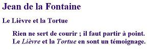
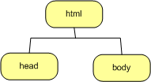
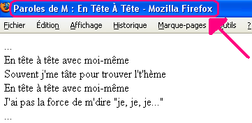

Introduction
Nous commençons par préciser quelques notions de base du
langage HTML. Ensuite, partant d'un petit exemple, nous élaborerons
une première page HTML. Enfin, nous verrons ce qu'est le quirk mode
et le validateur. Nous terminons ce chapitre par une brève
explication sur les caractères spéciaux.
Définition
Le HTML, HyperText Markup
Language, est un langage de présentation; il fournit des
informations sur la structure des documents. Il s'agit d'un standard
adopté par le W3C. Le HTML est constitué de balises
(signaux) destinées à informer le navigateur sur le contenu de la
page HTML qu'il doit afficher. Il s'agit d'un langage qui permet de
baliser des textes afin que les navigateurs en reconnaissent la
structure et la manière de l'afficher. Outre cet aspect de langage
de balisage (Markup Language), le HTML permet de faire des liens
hypertextes (HyperText). Un lien hypertexte est un moyen de
référencer d'autres sites à partir d'un site.
C'est ainsi que se tisse la toile, les sites ayant des liens entre
eux permettent la navigation tranquille sur le Web.
Un fichier dont l'extension est .html
n'est qu'un simple fichier texte n'incluant aucune information de
formatage contrairement au fichier .doc,
par exemple. La convention est d'ajouter l'extension .htm ou .html afin de
signifier qu'il s'agit bien d'un fichier HTML. .html
ou .htm. Cela ne change rien mais permet
simplement aux plateformes qui ne comprennent que les extensions
à trois caractères de fonctionner correctement.
Le choix d'un langage de balisage se justifie pleinement car il
offre la possibilité à tous navigateurs de
récupérer les ressources du Web. Le choix d'une
application WYSIWYG plutôt qu'un langage de balisage aurait
entraîné des dépendances vis à vis du format des
ressources or l'objectif premier du Web est certainement son
universalité.
WYSIWYG (What you see is what you get, càd ce que
vous voyez est ce que vous obtenez) est un acronyme utilisé
pour désigner des interfaces graphiques permettant de
composer visuellement le résultat voulu, par exemple pour un
logiciel de mise en page comme PowerPoint ou un traitement de texte
comme Word.
Editeurs de page HTML
Pour écrire une page HTML, un
éditeur est indispensable. Un éditeur HTML (ou
éditeur Web) est un logiciel conçu pour faciliter la
préparation et la modification de documents écrits en HTML. Le choix
est vaste et s'étend du simple bloc-notes à des
éditeurs puissants comme Eclipse par exemple.
Toutefois il est indispensable de débuter avec un
éditeur simple afin de comprendre progressivement HTML.
Lorsqu'on maîtrise parfaitement HTML (et CSS), il devient
judicieux de choisir un éditeur plus sophistiqué. A
l'école, vous disposez sur les machines de Notepad++,
il vous est conseillé d'utiliser celui-ci. Grâce à au
lien, vous pouvez facilement installer cet éditeur sur votre PC
personnel.
Extension ".html"
Pour écrire une page HTML, il suffit de la créer
dans l'éditeur et de l'enregistrer en veillant bien à
ce que l'extension ".html" ou ".htm" soit
présente. Nous vous conseillons vivement d'afficher les
extensions de vos fichiers dans votre explorateur. Effectivement,
par défaut, l'explorateur de fichiers XP n'affiche pas les
extensions de fichiers lorsqu'il s'agit d'un type répandu.
Par exemple, votre page "blabla.html" s'affichera comme
"blabla" dans l'explorateur sans l'extension
".html".
Afin d'afficher les extensions de vos fichiers dans
l'explorateur, sélectionnez dans le menu "Outils"
de l'explorateur Windows "Options des dossiers". Ensuite,
dans l'onglet "Affichage", faites défiler jusqu'au
moment ou vous verrez "Masquez les extensions des fichiers dont
le type est connu" et décochez cette option. Cliquez sur
"Ok" pour terminer.
Affichage des pages HTML
Pour afficher une page HTML, soit vous ouvrez votre navigateur
et sélectionnez dans le menu "fichier"
"Ouvrir" soit, dans votre explorateur, vous double-cliquez
sur votre page.
Elaborer un document HTML
Premier essai
Faisons un petit essai:
- ouvrez votre éditeur NotePad++
- encodez le texte suivant :

- enregistrez votre page avec le nom suivant delaFontaine.html
- fermez votre éditeur
- ouvrez votre page avec votre navigateur Web (en faisant un
double-click sur l'icône ou le nom du fichier contenant ce que vous
venez d'écrire par exemple)
Vous constatez que le contenu de votre fichier est
effectivement affiché mais sans aucune mise en forme. Il n'y
a ni titre, ni paragraphes. Ceci est normal puisqu'aucune mise en
forme n'a été effectuée; vous n'avez
indiqué aucune exigence quant à la structure et la
présentation de votre page.
Structurer une page, c'est y introduire des titres, des
paragraphes, des mots en évidence, ... bref, toutes les informations
sur la structure de la page. Le HTML permet le balisage du contenu
de votre page afin d'en définir la structure et la
présentation lors de l'affichage par le navigateur. Voyons
maintenant ce qu'est une balise !
HTML, langage de balisage
Définition
Une balise, en anglais markup, est un mot-clé assigné
à de l'information. Une balise est contenue entre
"<" et ">". Il existe des balises
ouvrantes et fermantes.
- une balise ouvrante s'exprime comme suit: < nom de la balise >. Par exemple, <h3>, est une balise ouvrante pour un
titre de niveau 3.
- une balise fermante renferme le même nom de balise
que la balise ouvrante correspondante mais commence par un
"slash" ( "/" ) :<
/nom de la balise >. </h3> est
la balise fermante pour mon titre ci-dessus.
Nous verrons par la suite qu'une balise ne doit pas toujours
se fermer en HTML mais bien en XHTML.
En HTML, un élément = balise ouvrante +
contenu + balise fermante. Par exemple, l'élément suivant <h3>Ceci est un titre de niveau
3</h3> est un titre de niveau 3.
Un élément peut contenir un ou plusieurs attributs. Un
attribut est un ajout d'information sur
l'élément. On spécifie l'attribut dans la
balise ouvrante en indiquant sa valeur. La balise ouvrante prend
alors la forme suivante : < uneBalise
unAttribut = uneValeur>. Lorsqu'un élément a
plusieurs attributs, l'ordre d'énumération de ceux-ci
importe peu. Attention, les attributs sont déterminés
pour les éléments, il ne s'agit pas de les inventer.
Effectivement, les navigateurs ne connaissent qu'une liste
d'attributs prédéfinis pour chaque
élément. Si vous inventez des attributs, les
navigateurs Web ne sauront pas quoi en faire. Quand un navigateur
identifie un élément ou un attribut, on dit qu'il
"supporte" cet élément ou cet attribut. Nous
identifierons quelques attributs pour les éléments que
nous allons aborder par la suite.
Par exemple, l'élément img est la balise
qui permet d'insérer une image dans un document HTML. Il faut
évidemment préciser quelle est l'image que l'on veut insérer. Comme
nous le verrons plus tard, il faudra donner la référence du fichier
qui contient cette image à l'aide d'un attribut. Si l'image à
insérer est logo.gif, l'élément prendra par exemple la forme
suivante : <img
src="images/logo.gif"/>.
Par convention, les balises s'écrivent en minuscule en
HTML.
Les types de balises
En HTML, on distingue deux types de balises:
- Les balises de structure: ces balises permettent
de structurer le contenu des pages HTML. Elle déterminent
les différents éléments de la page : les paragraphes, les titres,
les morceaux de pages, les listes, ... Ce qui correspond aux
balises suivantes: <p>, <h1>,<div>,<ul>,
...
- Les balises de forme: ces balises permettent la
mise en forme du texte. Par exemple, les balises <i>,
<font>, ...
Lorsqu'on écrit des pages HTML, le code source est souvent alourdi
par les balises de forme. La dernière version du standard HTML
encourage la séparation entre les balises de structure et de forme
afin d'alléger le contenu des pages HTML. Effectivement,
tandis que les anciennes versions du HTML mèlangent les balises de
forme et de structure, dans toutes les versions ultérieures à la
version 4.0, on préconise l'emploi de feuille de style (CSS) pour la
gestion de la forme. Dans le cadre de ce
cours, nous veillerons à respecter un standard (HTML 5) et
nous placerons tous les éléments de style dans des feuilles
de style (voir les chapitres sur les CSS).
Donc pas de styles dans les pages HTML !!!
Les CSS s'occuperont de cette partie.
Structure d'une page HTML
Commençons par analyser une simple page HTML:
<!DOCTYPE html>
<html lang="fr" >
<head>
<meta charset="UTF-8">
<title>Le titre de ma page </title>
</head>
<body>
J'écris ici le contenu de ma page...
</body>
</html>
Vous devez
connaître par coeur la structure de base d'un document HTML5 telle
que présentée ci-dessus.
La première ligne indique que c'est un document
HTML et plus particulièrement un document HTML5.
Ceux
d'entre vous qui auraient fait de l'HTML4 pourront remarquer
l'allégement de cette première ligne par rapport à HTML4.
La première balise qui permet de délimiter le fichier HTML est <html>. On retrouve la balise fermante
correspondante (</html>) en
fin de fichier.
On constate ensuite que le fichier HTML se compose d'une
en-tête, head et d'un
corps, body.
Graphiquement, on représente l'imbrication des balises via une
arborescence comme suit : .
Les balises <html>, <head> et <body>
L'entièreté de votre document doit se trouver entre
les balises <html> et </html> qui permet d'indiquer au
navigateur que le fichier est un fichier HTML.
Dans l'élément html, on place tout d'abord
l'élément en-tête du document. Cet élément se compose
des balises <head> et </head>.Les informations indiquées dans
l'en-tête d'un document HTML précisent des informations sur la
page. L'en-tête contient ce que l'on appelle des méta-informations,
càd des informations sur la page HTML elle-même. Ces informations ne
sont pas affichées en temps que telles mais renseignent le
navigateur.
Tout d'abord, dans l'en-tête, il est conseillé de spécifier
le type de contenu du fichier ainsi que les caractères
utilisés pour son encodage. Sans ces informations, certains
navigateurs afficheraient votre page bizarrement; imaginez un
navigateur asiatique configuré par défaut pour des idéogrammes,
impossible pour lui de comprendre les lettres de type latin (càd
ISO-8859-1) si on ne l'informe pas qu'il s'agit effectivement de
charactères de type latin.
Pour déclarer le type d'encodage de la page HTML, on spécifie
donc la balise suivante :
<meta charset="UTF-8">
- meta
- signifie qu'on donne des informations sur la page au
navigateur.
- charset
- permet de préciser le type d'encodage des caractères
utilisé pour le fichier html.
Il existe différents types d'encodage. Les plus connus dans
nos contrées sont le codage latin (ISO-8859-1) et le codage UTF-8.
Le premier encodage est capable de coder la plupart des langues
européeenes mais ne connait pas les caractères arabes, russes,
chinois, ... . Ceci est dommage quand on veut faire un site web
accessible sur Internet et par conséquent potentiellement par des
nations ayant des jeux de caractères différents. Vous l'aurez
peut-être compris le deuxième encodage (UTF-8) supporte la plupart
des jeux de caractères internationaux. C'est pourquoi nous
utiliserons celui-ci.
Vu que l'on
précise que l'on utilise l'encodage UTF-8 pour créer nos pages HTML,
vous devez vérifiez que votre fichier HTML est effectivement bien
enregistré avec cet encodage. Sinon vous aurez le symptôme suivant :
des caractères (souvent accentués) apparaitront bizaremment. Sous
Windows, vous pouvez vérifiez ceci dans le menu "Encodage" de
Notepad++, sélectionnez "Encodez en UTF-8 sans BOM". Sous Mac et
Linux, l'encodage par défaut est UTF-8 donc vous n'aurez normalement
pas de problème.
On peut également préciser le titre de la page grâce
à l'élément title. Le titre
s'affiche généralement en haut de la fenêtre du navigateur.
Voici un exemple avec un titre qui s'affiche dans le menu tandis que
les informations contextuelles sont gérées par le navigateur. La
balise <br> permet de faire un
passage à la ligne mais nous aborderons ce point plus loin.
| Le code de la page HTML : |
L'affichage par le navigateur : |
<html>
<head>
<meta charset="UTF-8">
<title>Paroles de M : En Tête À Tête</title>
</head>
<body>
...<br>
En tête à tête avec moi-même <br>
Souvent j'me tâte pour trouver l't'hème <br> En tête à tête
avec moi-même <br> J'ai pas la force de m'dire "je, je, je ..."
<br>
... <br>
</body>
</html>
|
 |
Ensuite, on peut préciser d'autres méta-informations comme
l'auteur de la page, des mots-clés de la page (ceux
permettant aux moteurs de recherche comme google de
référencer adéquatement votre page), ...
<meta name = "description" content = "Ce texte de description doit apparaître à
l'utilisateur dans les résultats du moteurs de recherche.">
<meta name = "author" content = "Emmeline Leconte">
<meta name = "keywords" content = "HTML, Information Meta, programme de recherche, protocole HTTP">
- meta
- signifie qu'on précise les méta-informations de la page.
- name
-
permet de préciser le type d'information qu'on donne dans content.
- content
- renferme l'information proprement dite.
Vous savez donc maintenant
comment renseigner votre nom et prénom sur chaque page HTML que vous créerez.
Dans l'élément html, après l'entête,
on précise ensuite le corps de la page qui englobe
l'ensemble du contenu de la page. Cet élément se compose des balises
<body> et </body>.
C'est le contenu du corps de la page qui est affiché
par le navigateur.
Le fichier HTML
La déclaration du type de document
En général, on commence un document HTML par la ligne suivante (juste
avant la balise <html>):
Cette ligne est la déclaration du type de document. Elle
permet de valider le document selon la recommendation du W3C afin de
certifier que votre site est conforme au standard annoncé.
Décomposons-la brièvement
- !DOCTYPE
- précise au navigateur qu'il ne s'agit pas d'un élément
HTML.
- html
- indique que l'élément <html> sera le premier de la
page.
Si vous ne précisez rien d'autre que ce que nous ne venons de voir
ci-dessus, vous indiquez que votre document respectera la norme
HTML5. Effectivement, il est judicieux de spécifier à
quelle version du HTML le document est conforme. La
conformité de votre site signifie qu'il respecte la version
standard sur laquelle tout le monde s'est mis d'accord.
Actuellement, le HTML standard est la version 5. Préciser le
standard respecté par votre site vous permet d'avoir la
garantie que vos pages HTML seront affichées de la même
façon (plus ou moins) par tous les navigateurs.
On peut placer des commentaires dans une page HTML. Ce qui
est mis en commentaire est ignoré par le navigateur. Le
commentaire se place entre les balises <!--
Ici les commentaires -->. Voici un exemple
| Le code de la page HTML : |
L'affichage par le navigateur : |
Nom : Feimal <br>
Prénom : <!-- Vérifier ci c'est Aïcha
--> <br>
Adresse : <!-- la rue??? -->
...
|
Nom : Feimal
Prénom :
Adresse :
...
|
Attention les
commentaires HTML sont visibles du côté utilisateur (si
l'utilisateur affiche la source du document HTML). On veillera donc
à ne pas mettre d'informations secrètes, confidentielles,
importantes dans ces commentaires !